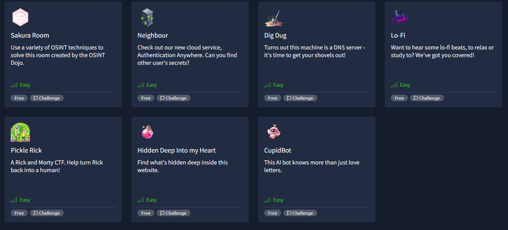
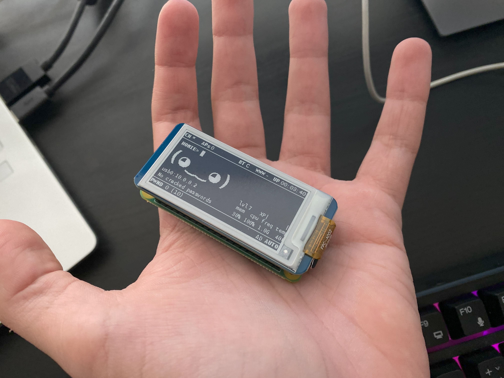
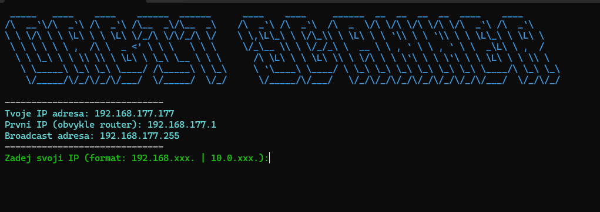
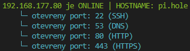
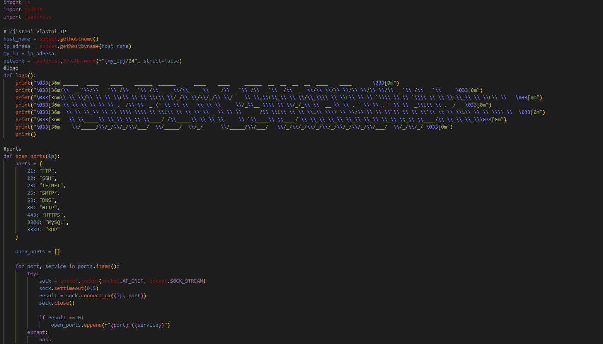
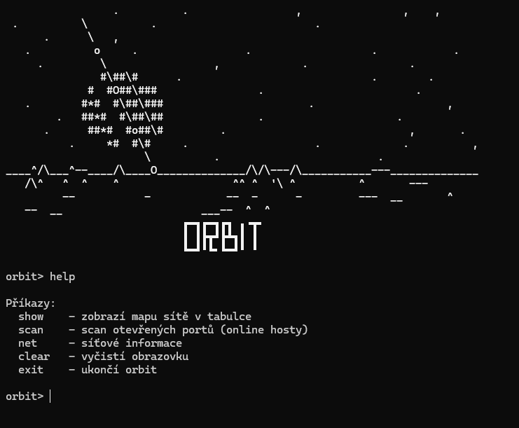
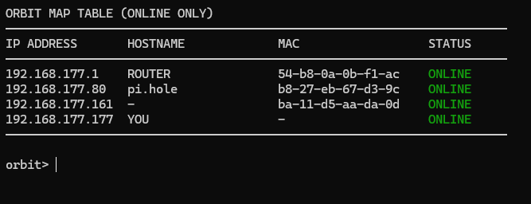
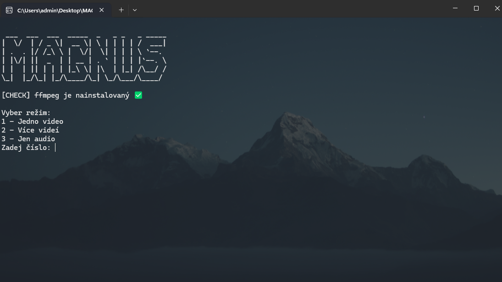
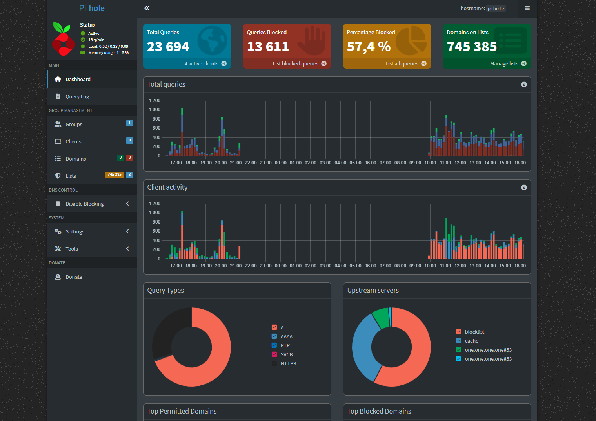
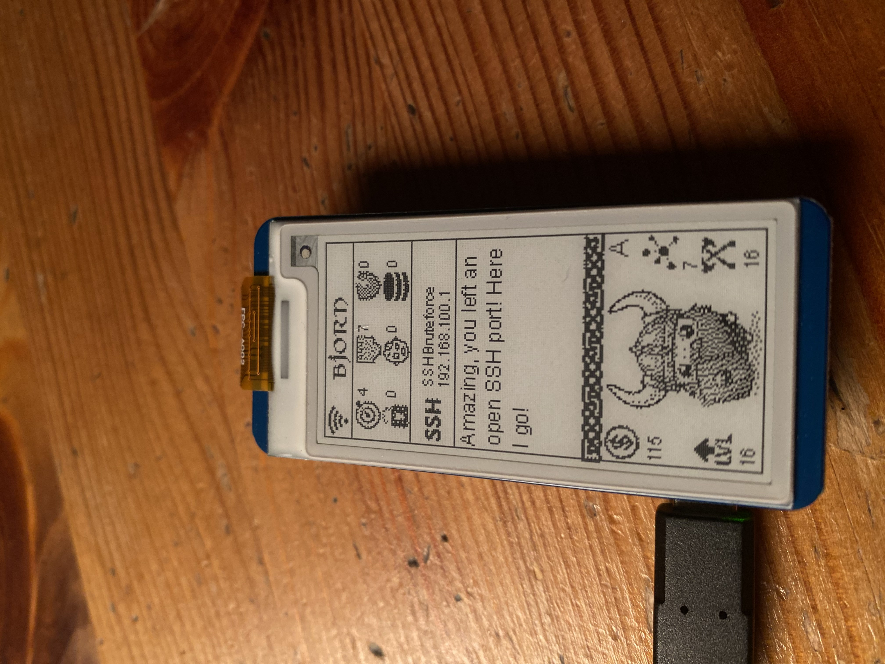

O mně
- Jmenuji se Erik Florian a je mi 15 let.
- Mezi mé zájmy patří: IT, divadlo a moderování, koloběžka, Rubikova kostka, letní sporty (cyklistika, hiking, plavání), 3D tiskárny
- Jsem komunikativní, energický a rád pracuji v kolektivu
IT
Python - online kurzy na Python
Práce v terminálu, Linux a programování - hackdays, techdays
Kybernetika - letní kemp SSPŠ
1. místo – CTF soutěž
Naše skupina vyhrála CTF soutěž pořádanou na vaší škole.
Tato zkušenost mě motivovala dále se věnovat kybernetické bezpečnosti.
Používání toolek a zkoumání technologií - níže
TryHackMe

- Na stránce tryhackme.com jsem dokončil několik úloh zaměřených na kybernetickou bezpečnost a linuxové prostředí
Moje projekty
Pwnagotchi – Raspberry Pi Zero WH

- Raspberry Pi Zero WH + Waveshare displej
- Systém založený na Ubuntu
- Správa přes SSH + webové rozhraní
- Vlastní konfigurace, Linux troubleshooting
Kalkulačka v Pythonu (Tkinter)
- Základní operace (+, -, ×, /)
- Oprava numerických chyb (ZeroDivisionError)
- GUI pomocí Tkinteru
- Tlačítka pomocí lambda
- Podpora numerické klávesnice a početních operací
IP Webhook
- Používá modul "socket" a "discord webhook"
- Je určen pouze pro interní síť
- Získavá pouze hostname a adresu na síti
- Data posílá na discord server
IP Pinger & Scanner



- Používá moduly socket, os a ipadrress
- Umí rozpoznat pouze základí porty
- Zabarvený text díky ANSII kódování
- Rozpozná lokální IP adresu a subnet masku
- Tři různé módy pingu
Orbit CLI


- Projekt dělaný s AI!
- Interaktivní shell s různými příkazy
- Příkazy: show, net, scan, clear, exit, help
- Tool zaměřený pouze na lokální síť
- Multi thread pinger
- Barevně kódovaný pomocí ANSII
Video Downloader

- Youtube video downloader založený na yt-dlp a ffmpeg
- Jedno rozlišení stahování videí a to 1080p
- Ryhchlý kompaktní, běží přímo v terminálu
- Celkem tři možnosti stahování
- Stahuje separátně zvuk, audio a ffmpeg je potom spojí dohromady
- Ffmpeg checker před spuštěním, když není, stáhne ho a přidá do PATH (windows only)
Ad BLocker - Pihole

- Ad Blocker pomocí pihole dns serveru
- Používá blocklist, podle kterého filtruje dns provoz
- Vlastní webové rozhraní, dashboard
- I na starších modelej raspberry funguje bezproblémově
- Dokáže blokovat veškeré typy reklam
- Zabudovaný antivirus, ropozná phishing, malware a další
Bjorn - Raspberry Pi Zero WH

- Raspberry Pi Zero WH + Waveshare displej
- Systém založený na Debian Bookworm
- Projekt inspirovaný Pwnagotchim (skeleton)
- Práce a experimentace s Wi-Fi testováním
Projekty ke stažení
Kurzy a certifikace
Certifikace - python
Certifikace SSPŠ
Moje oblíbené nástroje
Metasploit
Hashcat
Nmap
Zenmap
Bettercap
Sparrow-WiFi
Git
Wireshark
SEToolkit
Operační systémy
Arch Linux (Hyprland)
- Balíčky, konfigurace, terminál
Kali Linux Live
- Pentesting nástroje
Další OS
- Linux Mint
- Zorin OS
- Fedora
- Ubuntu
- Omarchy